Og velkomen til min mappeinlevering.
Nedenfor vil du se oppgavene og loggen.
Bildeoppgave
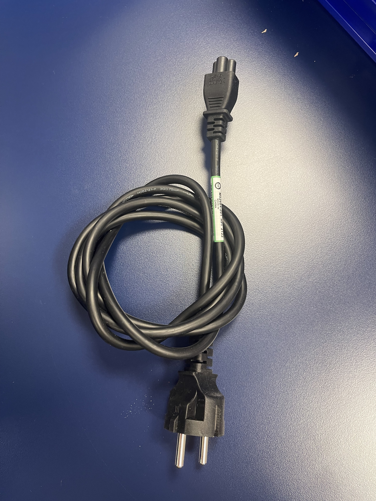Dette er en strømkabel
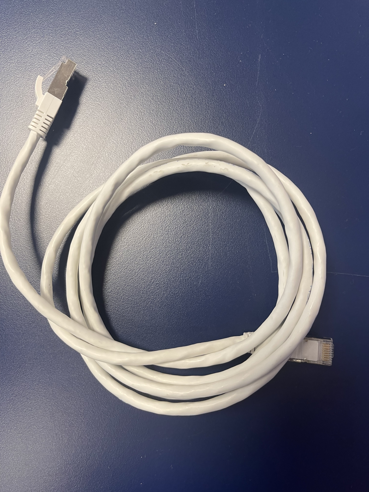
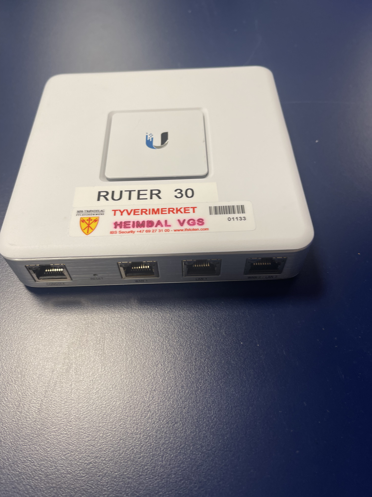
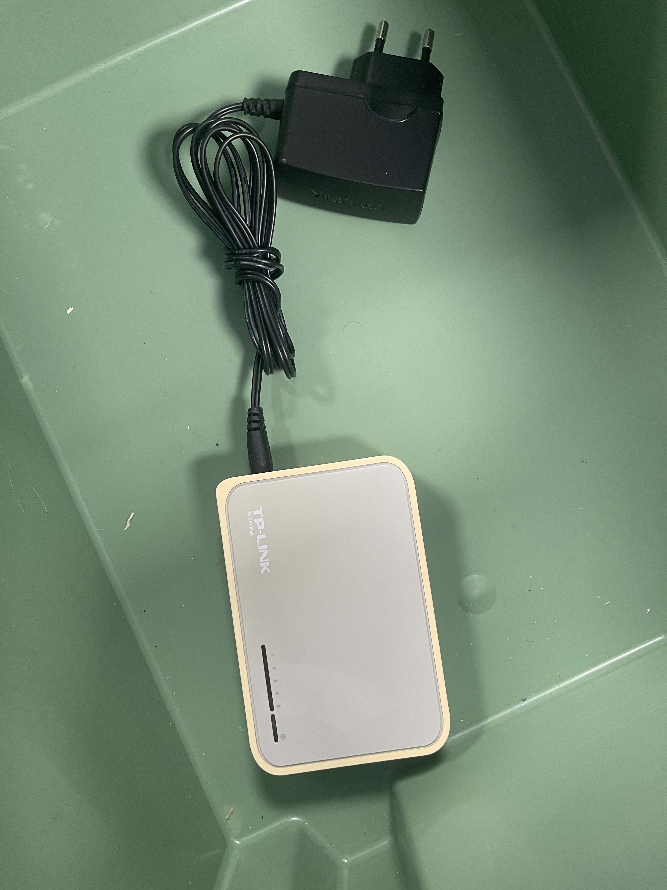
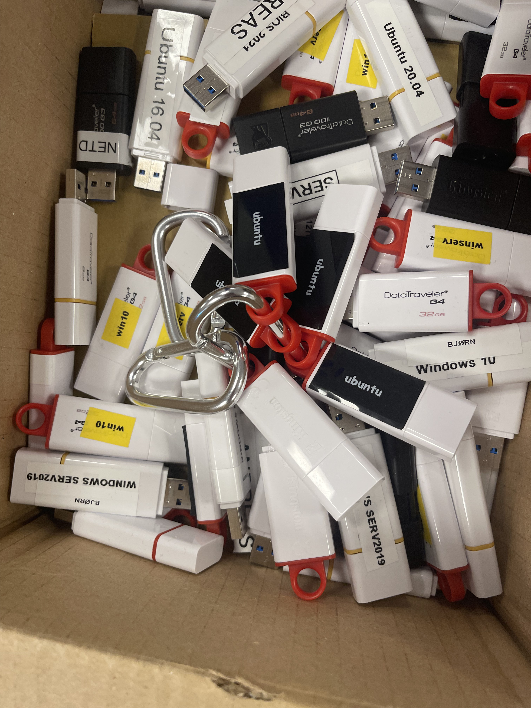
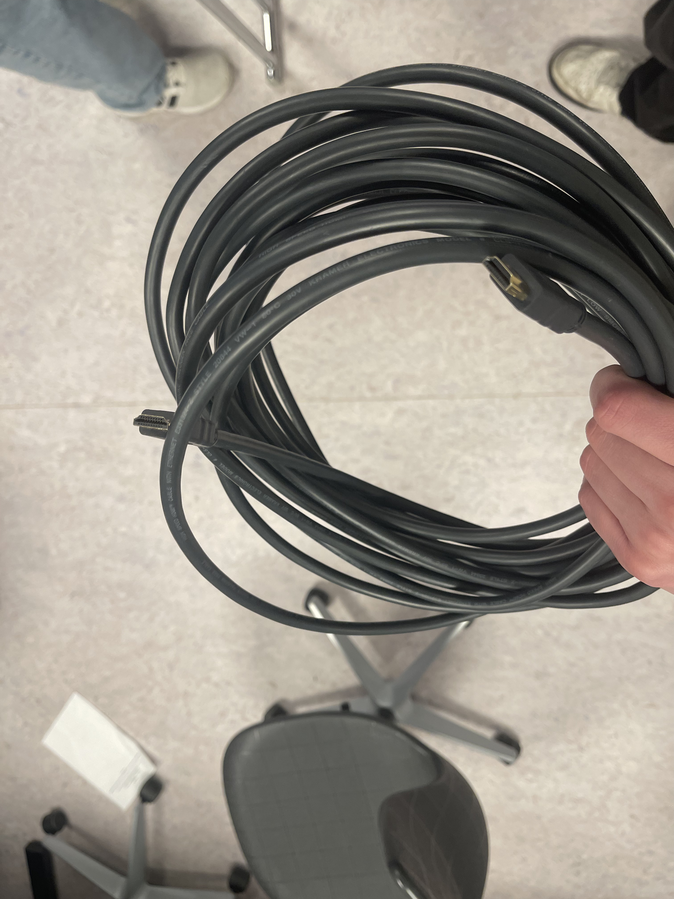
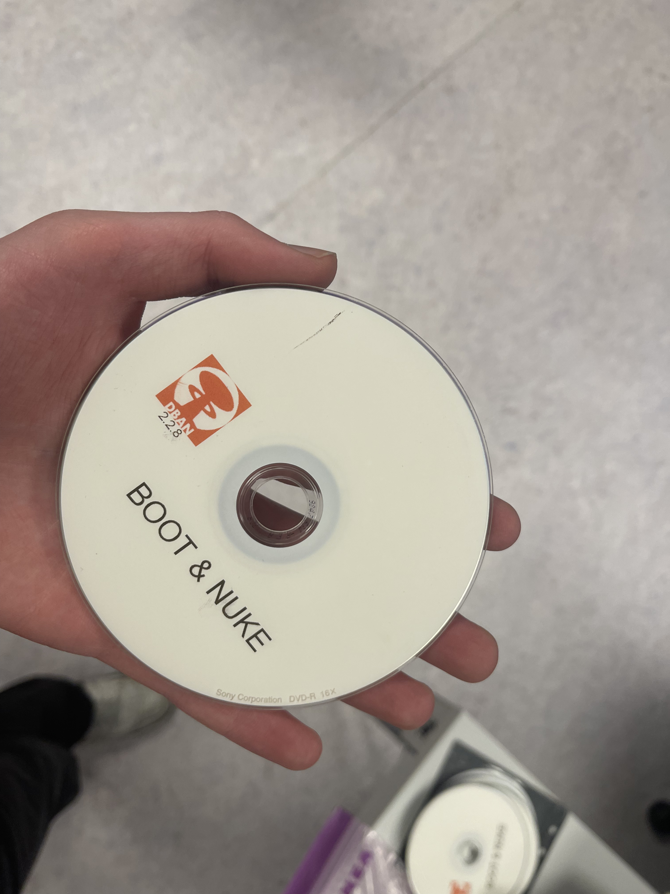
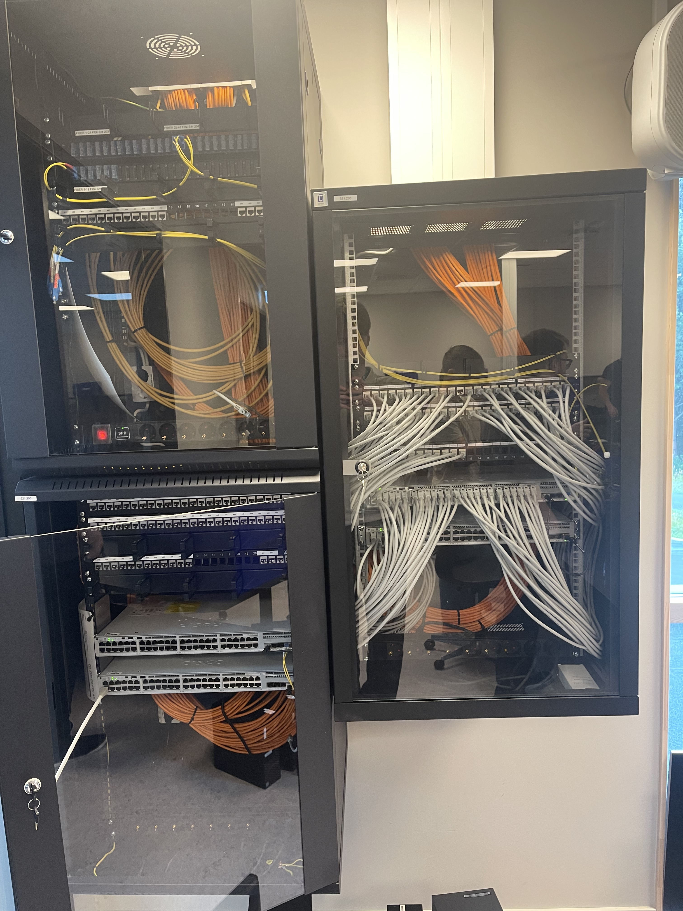
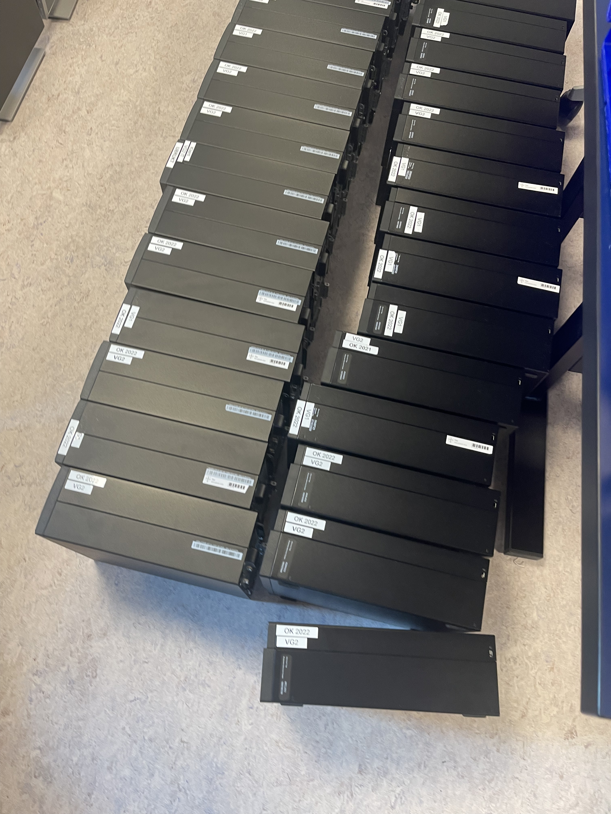
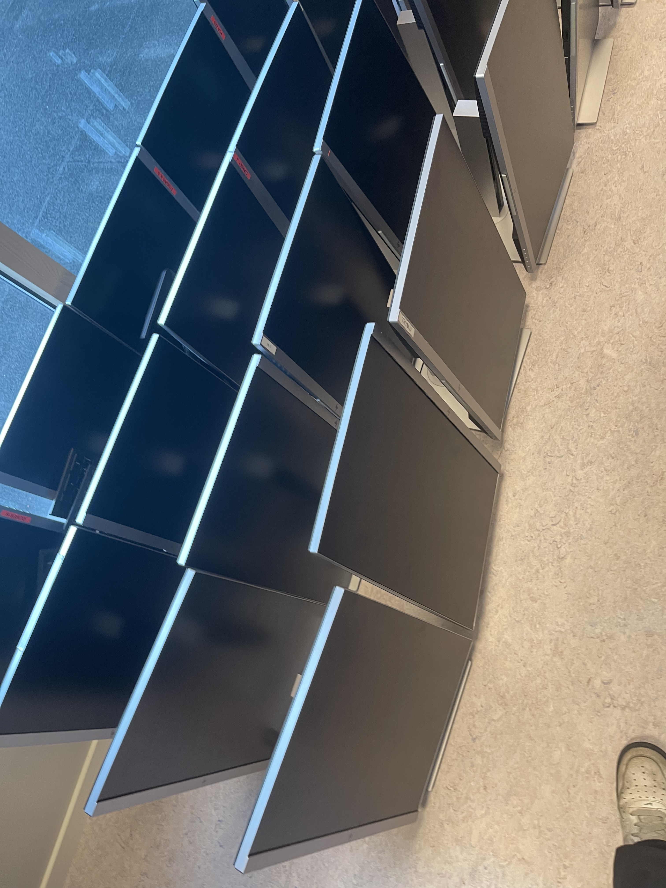
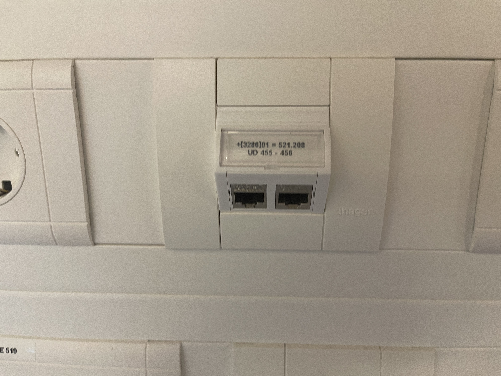
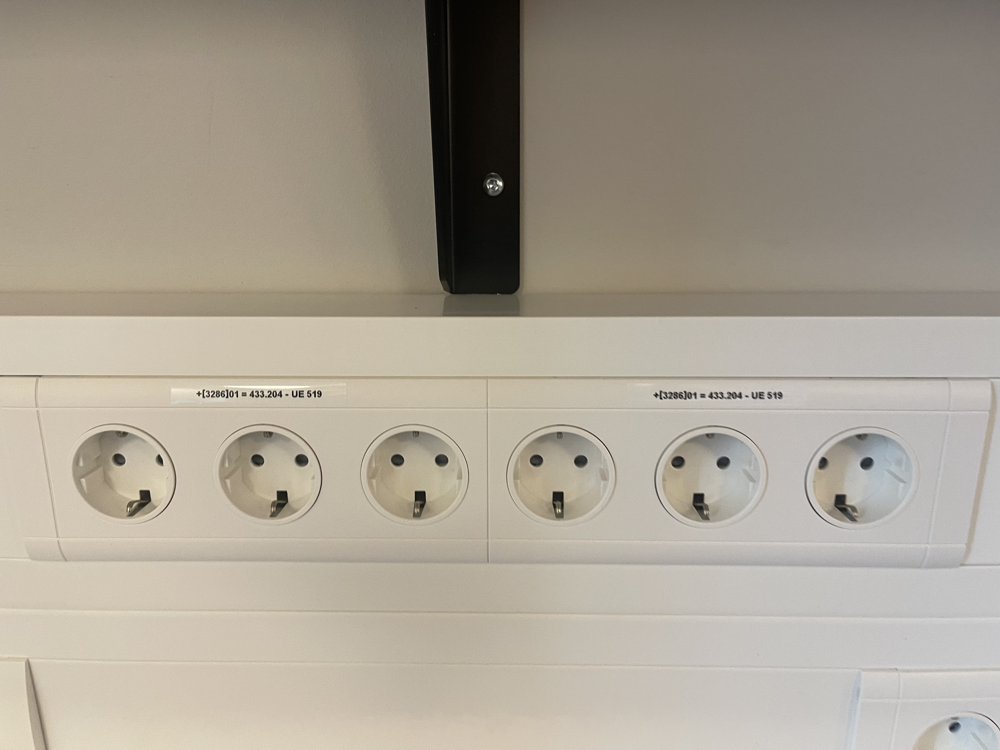
Linux journey
The Linux kernel was developed by Linus Torvalds.
Debian Testing and Debian Unstable have rolling releases.
RHEL (Red Hat Enterprise Linux) uses the YUM package manager (or DNF in newer versions).
Ubuntu is based on Debian.
RHEL is branched off of Fedora.
Linux Mint is based on Ubuntu, which is, in turn, based on Debian.
Gentoo uses the Portage package management system.
Arch Linux uses the Pacman package manager.
openSUSE's Administration/Installation Tool is called YaST (Yet another Setup Tool).
cd ~
mkdir innlevering4
cd innlevering4
mkdir mappe1 mkdir mappe2
touch fil1 touch fil2
Etter å ha utført 2a)-2e), befinner du deg i mappen "innlevering4". Du kan bruke kommandoen "pwd" for å vise hvilken mappe du befinner deg i for øyeblikket.
"." representerer den gjeldende mappen.
".." representerer foreldremappen til den gjeldende mappen.
"~" representerer hjemmemappen til brukeren.
"/" representerer rotmappen i filsystemet.